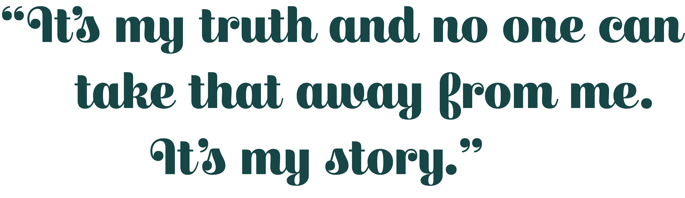
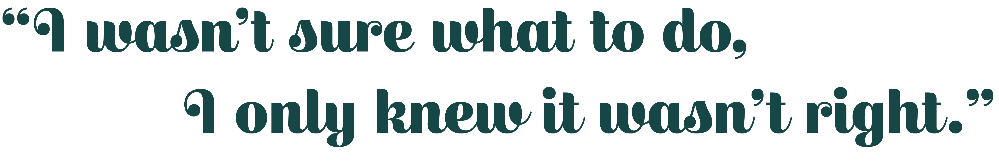

Personal Stories
Steve, 16
When Steve turned 14, he was allowed to make his first email and Facebook account. Around 4 months into the account, classmates began to harass him slowly by mocking his statuses and photos. Once they discovered Steves’s sexuality, they began to out him all over social media and the bullying only increased tenfold. Unsure if what to do, Steve would just let the abuse come in. It wasn’t until he was 15 that he shared his experience with his friends. His friends urged him to share this information with his parents.
"I’m comfortable with who I am,” Steve says. “It's my truth and no one can take that away from me. It's my story."
Jill, 18
Sometimes having your close friends engage in hurtful online behaviors can be hard to be around. For Jill, she had no idea what to do. Her friends refused to listen to Jill when she tried to dissuade them from bullying others. Her friends soon turned onto her, making Jill the target of their actions. Their actions went on for weeks until they propositioned Jill, saying they’d stop bullying her if she partook bullying others as well.